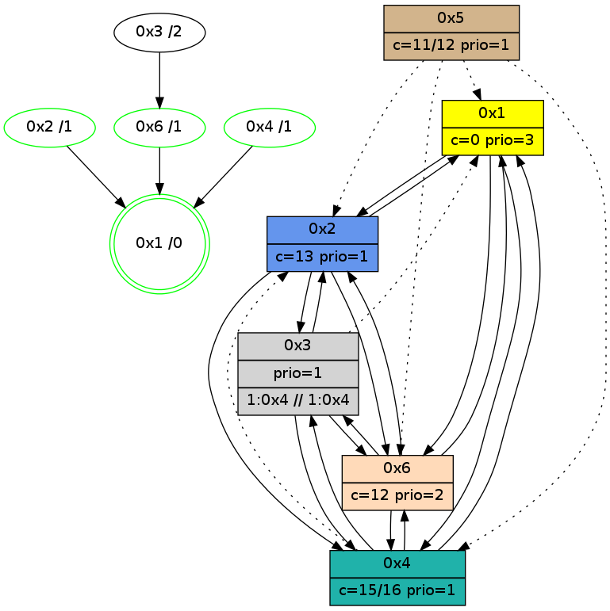

>> << IDX [start] -100 -25 -5 +0 +5 +25 +100 [1075.4060421]
 Previous packets
1070.002811 beacon02(adaf) #0 coord=01,02,05,03,04,06 cycle=432.0ms assoc 64 10 ba
1070.012814 beacon05(adaf) #0 coord=01,02,05,03,04,06 cycle=432.0ms assoc 64 b6 90
1070.022811 beacon03(adaf) #0 coord=01,02,05,03,04,06 cycle=432.0ms assoc 64 2a b4
1070.032812 beacon04(adaf) #0 coord=01,02,05,03,04,06 cycle=432.0ms assoc 64 8c 9e
1070.042812 beacon06(adaf) #0 coord=01,02,05,03,04,06 cycle=432.0ms assoc 64 f8 82
1070.054538 [Hello(3): seq=875 sym=6,2,4 asym=1 sysInfo=hasWarning stat=6:0,5,0,4/2:0,4,0,0/4:1,4,1,0/1:15,1,12,1]
1070.056786 [Hello(1): seq=777 sym=2,4,6 sysInfo=hasWarning,coloring-mode-on,ColoringModeRequestCalled stat=2:9,15,3,0/4:0,4,1,0/6:0,15,13,5]
1070.058456 [Hello(2): seq=1364 sym=3,6,1 sysInfo=hasWarning stat=3:6,1,4,1/6:4,6,10,4/1:6,2,3,0]
1070.060931 [Hello(6): seq=790 sym=4,2,1,3 sysInfo=hasWarning stat=4:0,4,1,0/2:12,6,2,0/1:10,0,14,1/3:6,13,12,10]
1070.062723 [Color(1) seq=303 @0:0 color=0 prio=3 c=c,d,f;7,e]
1070.065780 [STC(2)->1 #0.175 new-neigh,tree-change,inconsistent-stability,stable,to-color d=1]
1070.069558 [STC(6)->1 #0.175 new-neigh,tree-change,inconsistent-stability,stable,to-color d=1]
1070.071841 [Color(6) seq=262 @0:0 color=12 prio=2 c=0,7,d,e,f;1,4,6,8,9,b]
1070.075596 [STC(4)->1 #0.175 new-neigh,tree-change,inconsistent-stability,stable,to-color d=1]
1070.077256 [TreeStatus(4)-.->1 #0.175 new-neigh,tree-change,inconsistent-stability,stable child=1]
----------------------------------------------------------------------
1070.484959 beacon01(adaf) #0 coord=01,02,05,03,04,06 cycle=432.0ms assoc
-- color-indic=1 64 85 2a
1070.504920 beacon05(adaf) #0 coord=01,02,05,03,04,06 cycle=432.0ms assoc 64 72 ff
1070.534921 beacon06(adaf) #0 coord=01,02,05,03,04,06 cycle=432.0ms assoc 64 3c ed
1070.546221 [STC(3)->6-.->1 #0.175 new-neigh,tree-change,inconsistent-stability,to-color d=2]
1070.548314 [Hello(4): seq=877 sym=2,1,6,3 sysInfo=hasWarning stat=2:3,4,0,0/1:10,10,1,0/6:0,5,6,6/3:2,15,11,3]
1070.551439 [Color(4) seq=158 @0:0 color=15/16 prio=1 c=0,7,c;1,4,6,8,9,b,d,e]
----------------------------------------------------------------------
1070.977067 beacon01(adaf) #0 coord=01,02,05,03,04,06 cycle=432.0ms assoc
-- color-indic=1 64 c8 2d
1070.987027 beacon02(adaf) #0 coord=01,02,05,03,04,06 cycle=432.0ms assoc 64 99 d2
1070.997028 beacon05(adaf) #0 coord=01,02,05,03,04,06 cycle=432.0ms assoc 64 3f f8
1071.007028 beacon03(adaf) #0 coord=01,02,05,03,04,06 cycle=432.0ms assoc 64 a3 dc
1071.017028 beacon04(adaf) #0 coord=01,02,05,03,04,06 cycle=432.0ms assoc 64 05 f6
1071.027030 beacon06(adaf) #0 coord=01,02,05,03,04,06 cycle=432.0ms assoc 64 71 ea
1071.038742 [Hello(3): seq=876 sym=6,2,4 asym=1 sysInfo=hasWarning stat=6:1,6,1,4/2:1,4,1,0/4:2,5,2,1/1:0,2,12,1]
1071.041192 [Hello(1): seq=778 sym=2,4,6 sysInfo=hasWarning,coloring-mode-on,ColoringModeRequestCalled stat=2:10,15,4,0/4:1,5,2,1/6:0,0,14,5]
1071.045129 [Color(2) seq=263 @0:0 color=13 prio=1 c=0,7,c,e,f;1,4,6,8,9,b]
1071.048825 [Color(1) seq=304 @0:0 color=0 prio=3 c=c,d,f;7,e]
1071.052561 [Color(6) seq=263 @0:0 color=12 prio=2 c=0,7,d,e,f;1,4,6,8,9,b]
----------------------------------------------------------------------
1071.469175 beacon01(adaf) #0 coord=01,02,05,03,04,06 cycle=432.0ms assoc
-- color-indic=1 64 0c 42
1071.479136 beacon02(adaf) #0 coord=01,02,05,03,04,06 cycle=432.0ms assoc 64 5d bd
1071.489136 beacon05(adaf) #0 coord=01,02,05,03,04,06 cycle=432.0ms assoc 64 fb 97
1071.499136 beacon03(adaf) #0 coord=01,02,05,03,04,06 cycle=432.0ms assoc 64 67 b3
1071.509136 beacon04(adaf) #0 coord=01,02,05,03,04,06 cycle=432.0ms assoc 64 c1 99
1071.519137 beacon06(adaf) #0 coord=01,02,05,03,04,06 cycle=432.0ms assoc 64 b5 85
1071.530880 [Hello(2): seq=1365 sym=3,6,1,4 sysInfo=hasWarning stat=3:7,1,5,1/6:4,8,11,4/1:6,3,3,0/4:0,1,0,0]
1071.535350 [Hello(4): seq=878 sym=2,1,6,3 sysInfo=hasWarning stat=2:3,4,0,0/1:11,11,1,0/6:1,6,6,6/3:3,15,12,3]
1071.539113 [Color(4) seq=159 @0:0 color=15/16 prio=1 c=0,7,c;1,4,6,8,9,b,d,e]
----------------------------------------------------------------------
1071.961283 beacon01(adaf) #0 coord=01,02,05,03,04,06 cycle=432.0ms assoc
-- color-indic=1 64 40 f2
1071.971243 beacon02(adaf) #0 coord=01,02,05,03,04,06 cycle=432.0ms assoc 64 11 0d
1071.981243 beacon05(adaf) #0 coord=01,02,05,03,04,06 cycle=432.0ms assoc 64 b7 27
1071.991244 beacon03(adaf) #0 coord=01,02,05,03,04,06 cycle=432.0ms assoc 64 2b 03
1072.001244 beacon04(adaf) #0 coord=01,02,05,03,04,06 cycle=432.0ms assoc 64 8d 29
1072.011244 beacon06(adaf) #0 coord=01,02,05,03,04,06 cycle=432.0ms assoc 64 f9 35
1072.022969 [Hello(3): seq=877 sym=6,2,4 asym=1 sysInfo=hasWarning stat=6:2,7,1,4/2:2,4,1,0/4:3,6,2,1/1:1,3,12,1]
1072.025708 [Color(2) seq=264 @0:0 color=13 prio=1 c=0,7,c,e,f;1,4,6,8,9,b]
1072.028078 [Hello(1): seq=779 sym=2,4,6 sysInfo=hasWarning,coloring-mode-on,ColoringModeRequestCalled stat=2:11,15,4,0/4:2,6,2,1/6:0,1,14,5]
1072.030576 [Color(6) seq=264 @0:0 color=12 prio=2 c=0,7,d,e,f;1,4,6,8,9,b]
1072.032038 [STC(1) #0.176 new-neigh,tree-change,inconsistent-stability,stable,to-color d=0]
1072.035594 [Color(1) seq=305 @0:0 color=0 prio=3 c=c,d,f;7,e]
----------------------------------------------------------------------
1072.453392 beacon01(adaf) #0 coord=01,02,05,03,04,06 cycle=432.0ms assoc
-- color-indic=1 64 84 9d
1072.463353 beacon02(adaf) #0 coord=01,02,05,03,04,06 cycle=432.0ms assoc 64 d5 62
1072.473354 beacon05(adaf) #0 coord=01,02,05,03,04,06 cycle=432.0ms assoc 64 73 48
1072.483353 beacon03(adaf) #0 coord=01,02,05,03,04,06 cycle=432.0ms assoc 64 ef 6c
1072.493355 beacon04(adaf) #0 coord=01,02,05,03,04,06 cycle=432.0ms assoc 64 49 46
1072.503354 beacon06(adaf) #0 coord=01,02,05,03,04,06 cycle=432.0ms assoc 64 3d 5a
1072.514961 [STC(6)->1 #0.176 new-neigh,tree-change,inconsistent-stability,stable,to-color d=1]
1072.517047 [Hello(4): seq=879 sym=1,6,3 asym=2 sysInfo=hasWarning stat=1:12,12,2,0/6:1,7,6,6/3:4,15,12,3/2:3,5,0,0]
1072.519005 PARSE ERROR************************
Traceback (most recent call last):
File "PacketAnalysis.py", line 167, in showOperaPacket
structPacket = OperaPacketParse.parsePacket(rawPacket)
File "../../pkg-python/HipSens/Core/OperaPacketParse.py", line 461, in parsePacket
return parseHelloMessage(data)
File "../../pkg-python/HipSens/Core/OperaPacketParse.py", line 127, in parseHelloMessage
assert struct.calcsize("H")*len(neighAddrList) == len(linkList)
AssertionError
48 20 02 00 05 56 00 02 02 08 03 00 06 00 01 00 04 00 53 04 00 02 00 00 4c 08 15 18 4b 94 04 47 00 21 4c f5
1072.521986 [STC(4)->1 #0.176 new-neigh,tree-change,inconsistent-stability,stable,to-color d=1]
1072.524599 [Color(4) seq=160 @0:0 color=15/16 prio=1 c=0,7,c;1,4,6,8,9,b,d,e]
1072.526423 [STC(2)->1 #0.176 new-neigh,tree-change,inconsistent-stability,stable,to-color d=1]
----------------------------------------------------------------------
1072.945500 beacon01(adaf) #0 coord=01,02,05,03,04,06 cycle=432.0ms assoc
-- color-indic=1 64 a1 a0
1072.955460 beacon02(adaf) #0 coord=01,02,05,03,04,06 cycle=432.0ms assoc 64 f0 5f
1072.965460 beacon05(adaf) #0 coord=01,02,05,03,04,06 cycle=432.0ms assoc 64 56 75
1072.975461 beacon03(adaf) #0 coord=01,02,05,03,04,06 cycle=432.0ms assoc 64 ca 51
1072.985461 beacon04(adaf) #0 coord=01,02,05,03,04,06 cycle=432.0ms assoc 64 6c 7b
1072.995462 beacon06(adaf) #0 coord=01,02,05,03,04,06 cycle=432.0ms assoc 64 18 67
1073.007415 [Hello(3): seq=878 sym=6,2,4 asym=1 sysInfo=hasWarning stat=6:3,8,2,4/2:3,4,2,0/4:4,7,3,1/1:2,4,13,1]
1073.009352 [Hello(6): seq=793 sym=4,2,1,3 sysInfo=hasWarning stat=4:3,7,3,1/2:14,6,3,0/1:10,2,15,1/3:9,13,13,10]
1073.011898 [Color(2) seq=265 @0:0 color=13 prio=1 c=0,7,c,e,f;1,4,6,8,9,b]
1073.014219 [Color(6) seq=265 @0:0 color=12 prio=2 c=0,7,d,e,f;1,4,6,8,9,b]
1073.016025 [STC(3)->6-.->1 #0.176 new-neigh,tree-change,inconsistent-stability,to-color d=2]
1073.019752 [Hello(1): seq=780 sym=2,4,6 sysInfo=hasWarning,coloring-mode-on,ColoringModeRequestCalled stat=2:12,15,5,0/4:3,7,3,1/6:0,1,15,5]
1073.022099 [Color(1) seq=306 @0:0 color=0 prio=3 c=c,d,f;7,e]
----------------------------------------------------------------------
1073.437607 beacon01(adaf) #0 coord=01,02,05,03,04,06 cycle=432.0ms assoc
-- color-indic=1 64 65 cf
1073.447567 beacon02(adaf) #0 coord=01,02,05,03,04,06 cycle=432.0ms assoc 64 34 30
1073.457568 beacon05(adaf) #0 coord=01,02,05,03,04,06 cycle=432.0ms assoc 64 92 1a
1073.467569 beacon03(adaf) #0 coord=01,02,05,03,04,06 cycle=432.0ms assoc 64 0e 3e
1073.477571 beacon04(adaf) #0 coord=01,02,05,03,04,06 cycle=432.0ms assoc 64 a8 14
1073.487569 beacon06(adaf) #0 coord=01,02,05,03,04,06 cycle=432.0ms assoc 64 dc 08
1073.499309 [Hello(2): seq=1367 sym=3,6,1,4 sysInfo=hasWarning stat=3:8,1,6,1/6:4,10,11,4/1:8,5,4,0/4:1,2,0,0]
1073.503788 [Hello(4): seq=880 sym=1,6,3 asym=2 sysInfo=hasWarning stat=1:13,13,2,0/6:2,8,7,6/3:4,15,13,3/2:3,6,1,0]
1073.507640 [Color(4) seq=161 @0:0 color=15/16 prio=1 c=0,7,c;1,4,6,8,9,b,d,e]
----------------------------------------------------------------------
1073.929716 beacon01(adaf) #0 coord=01,02,05,03,04,06 cycle=432.0ms assoc
-- color-indic=1 64 29 7f
1073.939676 beacon02(adaf) #0 coord=01,02,05,03,04,06 cycle=432.0ms assoc 64 78 80
1073.949677 beacon05(adaf) #0 coord=01,02,05,03,04,06 cycle=432.0ms assoc 64 de aa
1073.959679 beacon03(adaf) #0 coord=01,02,05,03,04,06 cycle=432.0ms assoc 64 42 8e
1073.969677 beacon04(adaf) #0 coord=01,02,05,03,04,06 cycle=432.0ms assoc 64 e4 a4
1073.979678 beacon06(adaf) #0 coord=01,02,05,03,04,06 cycle=432.0ms assoc 64 90 b8
1073.991398 [Hello(3): seq=879 sym=6,2,4 asym=1 sysInfo=hasWarning stat=6:3,8,2,4/2:4,4,2,0/4:5,8,3,1/1:3,5,13,1]
1073.993664 [Hello(1): seq=781 sym=2,4,6 sysInfo=hasWarning,coloring-mode-on,ColoringModeRequestCalled stat=2:13,15,5,0/4:4,8,3,1/6:0,1,15,5]
1073.997613 [Color(1) seq=307 @0:0 color=0 prio=3 c=c,d,f;7,e]
1073.999528 [Color(2) seq=266 @0:0 color=13 prio=1 c=0,7,c,e,f;1,4,6,8,9,b]
1074.002655 [Color(6) seq=266 @0:0 color=12 prio=2 c=0,7,d,e,f;1,4,6,8,9,b]
----------------------------------------------------------------------
1074.421826 beacon01(adaf) #0 coord=01,02,05,03,04,06 cycle=432.0ms assoc
-- color-indic=1 64 ed 10
1074.431790 beacon02(adaf) #0 coord=01,02,05,03,04,06 cycle=432.0ms assoc 64 bc ef
1074.441788 beacon05(adaf) #0 coord=01,02,05,03,04,06 cycle=432.0ms assoc 64 1a c5
1074.451790 beacon03(adaf) #0 coord=01,02,05,03,04,06 cycle=432.0ms assoc 64 86 e1
1074.461787 beacon04(adaf) #0 coord=01,02,05,03,04,06 cycle=432.0ms assoc 64 20 cb
1074.471789 beacon06(adaf) #0 coord=01,02,05,03,04,06 cycle=432.0ms assoc 64 54 d7
1074.483155 [STC(1) #0.177 new-neigh,tree-change,inconsistent-stability,stable,to-color d=0]
1074.485249 [Hello(4): seq=881 sym=1,6,3 asym=2 sysInfo=hasWarning stat=1:14,14,2,0/6:2,9,7,6/3:5,15,13,3/2:3,7,1,0]
1074.487201 [Hello(2): seq=1368 sym=3,6,1,4 sysInfo=hasWarning stat=3:9,1,6,1/6:4,11,11,4/1:8,5,4,0/4:2,3,0,0]
1074.490211 [Color(4) seq=162 @0:0 color=15/16 prio=1 c=0,7,c;1,4,6,8,9,b,d,e]
----------------------------------------------------------------------
1074.913935 beacon01(adaf) #0 coord=01,02,05,03,04,06 cycle=432.0ms assoc
-- color-indic=1 64 a0 17
1074.923896 beacon02(adaf) #0 coord=01,02,05,03,04,06 cycle=432.0ms assoc 64 f1 e8
1074.933896 beacon05(adaf) #0 coord=01,02,05,03,04,06 cycle=432.0ms assoc 64 57 c2
1074.943895 beacon03(adaf) #0 coord=01,02,05,03,04,06 cycle=432.0ms assoc 64 cb e6
1074.953896 beacon04(adaf) #0 coord=01,02,05,03,04,06 cycle=432.0ms assoc 64 6d cc
1074.963897 beacon06(adaf) #0 coord=01,02,05,03,04,06 cycle=432.0ms assoc 64 19 d0
1074.975490 [STC(4)->1 #0.177 new-neigh,tree-change,inconsistent-stability,stable,to-color d=1]
1074.977575 [Color(2) seq=267 @0:0 color=13 prio=1 c=0,7,c,e,f;1,4,6,8,9,b]
1074.980728 [STC(6)->1 #0.177 new-neigh,tree-change,inconsistent-stability,stable,to-color d=1]
1074.983978 [Color(6) seq=267 @0:0 color=12 prio=2 c=0,7,d,e,f;1,4,6,8,9,b]
1074.989968 [Hello(1): seq=782 sym=2,4,6 sysInfo=hasWarning,coloring-mode-on,ColoringModeRequestCalled stat=2:14,15,5,0/4:5,9,3,1/6:0,2,15,5]
1074.992987 [Color(1) seq=308 @0:0 color=0 prio=3 c=c,d,f;7,e]
1074.996494 [Hello(3): seq=880 sym=6,2,4 asym=1 sysInfo=hasWarning stat=6:4,9,2,4/2:5,4,2,0/4:6,9,3,1/1:4,6,14,1]